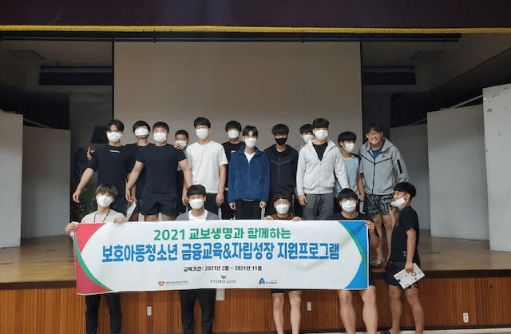
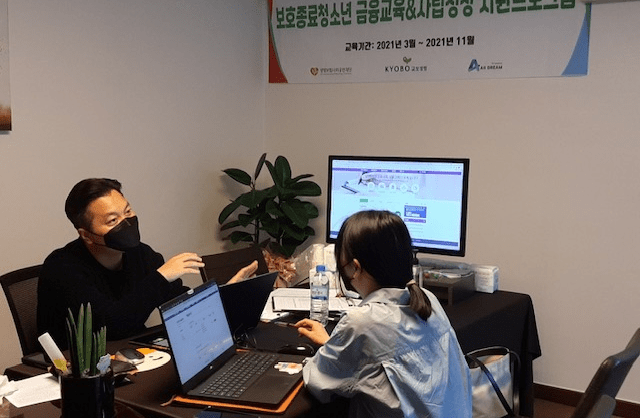

자립준비청년 자립지원사업
시설이나 가정 위탁이 끝나고 독립해야 하는 자립준비 청년들이 경제적 독립에 대한 두려움을 극복하고, 올바른 지식과 경험으로 자립하는 기회를 제공합니다


자립준비청년 자립지원사업
금융분야 전문가와 희망다솜장학생 출신 선배들과의 멘토링을 통해 자립준비를 돕습니다. 학생들의 금융 이해도, 수입·지출을 점검하여 컨설팅 형식으로 진행하며, 자립금융활동비를 지원하고, 저축과 펀드 등의 금융상품 체험 기회를 갖게 합니다.
주요 프로그램
금융컨설팅, 자립선배 멘토링, 상담 등
참여대상
수도권, 광역대도시 자립준비청년 200명 (만 18~24세 이하)
사업파트너
사회복지법인 평화의마을